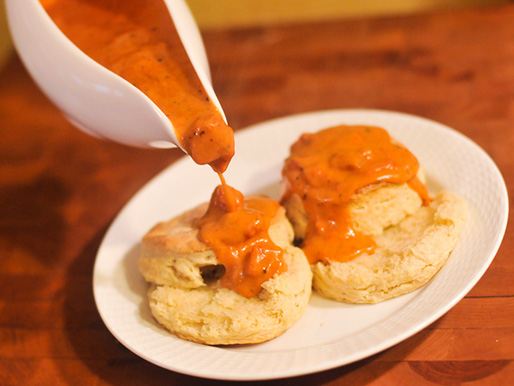

Homemade recipes
Tomato Gravy Recipe
Ingredients
- 12 all spice
- 10 whole cloves
- Salt and Pepper to taste
- 9 Tablespoons oil
- 6 cups Tomato Juice
- 3 cups water
- 4 teaspoons salt
- 3 teaspoons sugar
- 2 pounds ground beef
- 1 yellow onion
- 1 teaspoon garlic salt
Steps
- Turn oven on to 400 degrees.
- Add tomato juice, salt, sugar, water, oil, all spice, and whole cloves in large pot.
- Boil gravy mixture.
- While mixture is boiling mince onions and mix ground beef, onion, salt and pepper, and garlic together.
- Form meatballs to desired size and place into oven.
- Take gravy mix and gather all the allspice and cloves, should count 12 allspice and 10 cloves.
- Add flour or cornstarch and water to mixture to thicken and boil for 5 minutes.
- Once meatballs are done place in gravy and serve over mashed potatoes.
